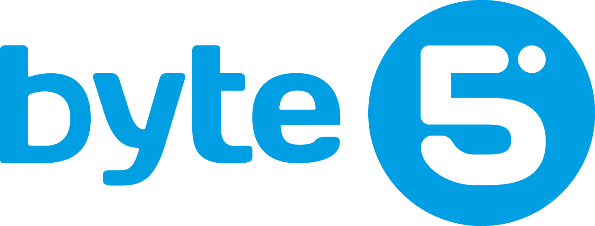

01
Code-Frameworks
LangGraph, CrewAI, AutoGen. Mächtig — aber nur für Devs. Jeder Agent ein eigenes Deploy.

LangGraph, CrewAI, AutoGen. Mächtig — aber nur für Devs. Jeder Agent ein eigenes Deploy.
Copilot Studio, ChatGPT Enterprise. Sofort startklar — aber deine Daten landen beim Anbieter.
n8n, Make, Zapier. Klickbar — aber Workflows, keine Agenten mit Gedächtnis und Urteil.
Jede Credential verschlüsselt. Kein Plaintext in ENV, kein Plaintext in Code.
Jeder Agent bekommt ein eigenes Capability-Token. Widerruf pro Agent, nicht pro System.
Jeder Tool-Call wird protokolliert: wer, wann, mit welcher Berechtigung. Compliance-fertig.
Browser-UI. Plugin-Marketplace. Drag-und-Drop. Test-Console.
TypeScript-SDK. Capability-Interfaces. Lokale Entwicklung mit Hot-Reload.
Beide Türen produzieren denselben Agent. Operator passt Dev-Agenten an. Dev erweitert Operator-Agenten.
Agent will einen Public-LLM-Provider fragen. Anfrage enthält Personalien, Zahlen, Domain-Wissen.
Privacy-Proxy ersetzt sensible Spans durch Token-Platzhalter. Token-Map landet verschlüsselt im Vault.
Public-Provider sieht nur die maskierte Version. Antwort kommt mit denselben Platzhaltern zurück.
Innerhalb deines Unternehmens werden Tokens aufgelöst. Privacy Receipt protokolliert, was maskiert war.
Welcher LLM, welcher Vector-Store, welche Memory. Pro Agent auswählbar — Marketing-Agent auf OpenAI, HR-Agent auf On-Prem-Llama.
Was der Agent erreichen darf: Channels (Teams, Telegram), Integrationen (ERP, Confluence), Sub-Agenten zum Delegieren.
Wer der Agent ist: Systemprompt, Memory-Scope, Verhaltensregeln. Versioniert, A/B-testbar, jederzeit anpassbar.
Conversational Interfaces: Teams, Telegram, Web-Chat, Voice. Ein Agent kann gleichzeitig auf mehreren Channels leben.
Verbindung zu Bestandssystemen: ERP, Confluence, M365, eigene REST/GraphQL-APIs via SDK.
Vorgefertigte Rollen mit Persona und Plugin-Set: HR, Buchhaltung, Compliance. Installieren, anpassen, fertig.
Entitäten und Beziehungen statt Dokumenten-Liste. Person → arbeitet an → Projekt → gehört zu → Abteilung.
Verbindet Confluence-Pages mit ERP-Records mit Mail-Threads. Eine Wahrheit, viele Quellen.
Jeder Agent sieht nur den Graph-Ausschnitt, den seine Credentials erlauben. Scoped Reads, auditierbar.
Verifiziert Agent-Outputs gegen Schema, Halluzinations-Checks und Compliance-Regeln — bevor sie ausgeliefert werden.
Jeder Agent-Turn ist replayable. „Warum hat der Agent das gesagt?" wird zur Akte, nicht zum Rätsel.
Fertige Agenten als Paket exportieren — für Backup, Portierung oder Übergabe an Kunden.
Cron oder Event-Trigger. „Jeden Montag 8 Uhr Wochenreport" — keine Schreibtisch-Wecker mehr.
Der Agent rendert passende UI in Teams: Buttons, Formulare, Tabellen — statt Plain-Text-Wallpaper.
Routine löst Card aus, du klickst „Freigeben", Agent setzt fort. Kein App-Wechsel, kein Copy-Paste.